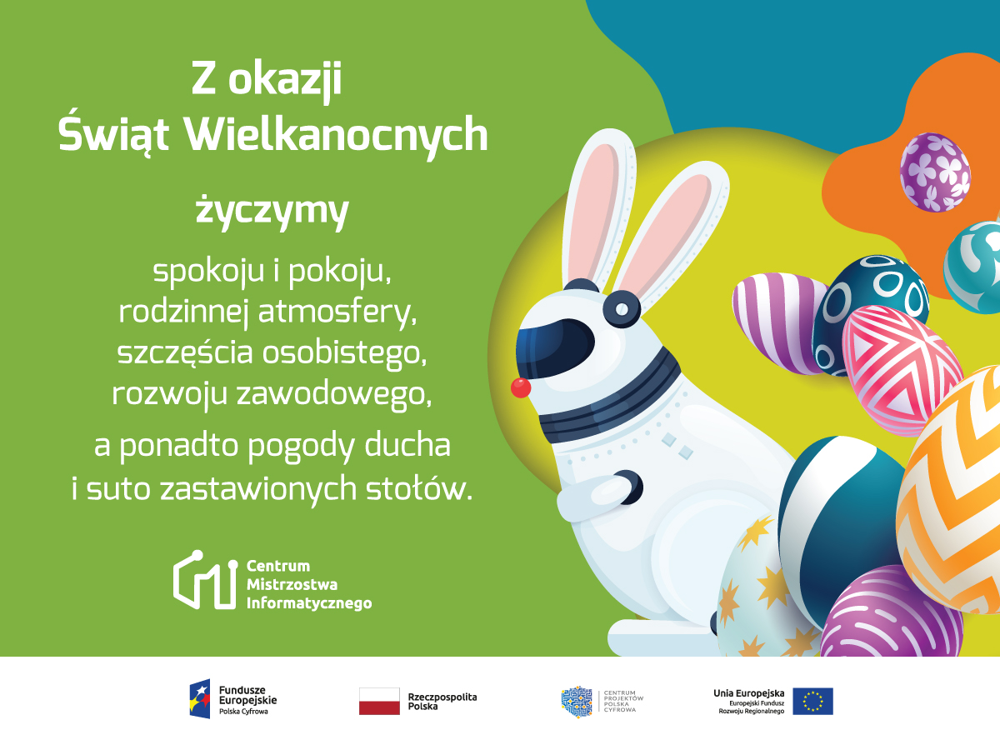

Centrum Mistrzostwa Informatycznego to ogólnopolski projekt grantowy, którego celem jest podniesienie kompetencji kadry dydaktycznej oraz aktywizacja młodzieży uzdolnionej informatycznie. Celem projektu jest podniesienie kompetencji kadry dydaktycznej, tj. osób prowadzących zajęcia pozalekcyjne rozwijające zainteresowania informatyczne, a także aktywizacji młodzieży uzdolnionej informatycznie, pobudzania kreatywności oraz promowania współpracy zespołowej w ramach kół informatycznych. Projekt CMI stanowi kompleksową koncepcję wzmocnienia polskiej edukacji informatycznej ukierunkowanej na kształcenia uzdolnionych uczniów przy zaangażowaniu najlepszych uczelni technicznych w kraju. Dzięki realizacji wskazanych celów projekt wzmocni u uczniów chęć rozwoju zainteresowań z zakresu algorytmiki i programowania, posłuży także upowszechnieniu idei konkursów informatycznych oraz wyłoni zespoły zdolne do podjęcia rywalizacji w zawodach informatycznych na poziomie krajowym oraz ogólnoświatowym. CMI przyczyni się do podniesienia kompetencji dydaktycznych 1500 osób prowadzących koła informatyczne oraz 12000 uczniów. Projekt współfinansowany jest ze środków Unii Europejskiej z Europejskiego Funduszu Rozwoju Regionalnego w ramach Programu Operacyjnego Polska Cyfrowa na lata 2014 - 2020.
